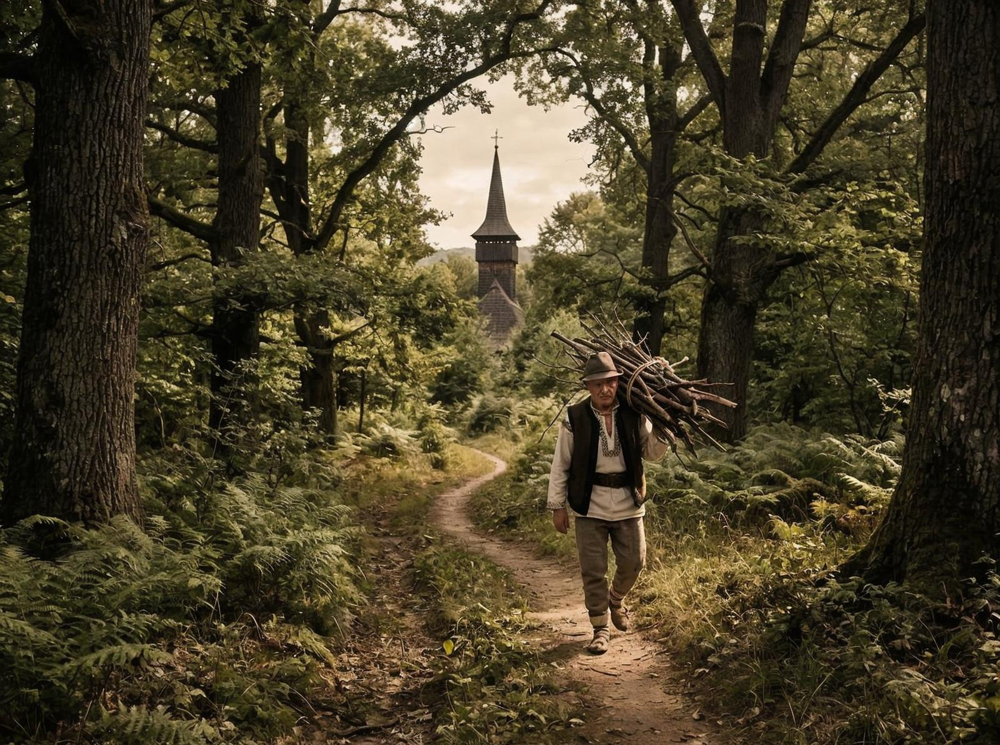
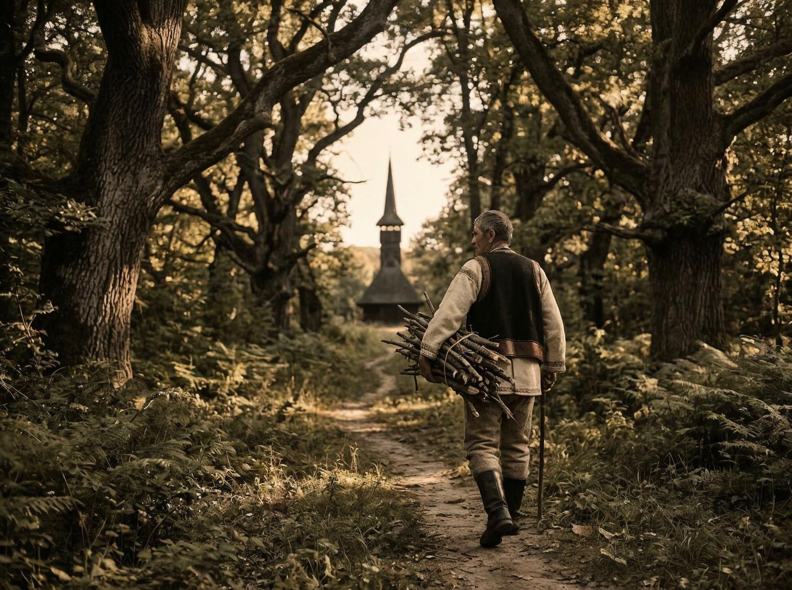

Coordonatele îmi sunt notate în agendă: 47° 42′ 36″ N 22° 51′ 00″ E. Biserica din Pustietate. Situată în județul Satu Mare, între orașul Carei și comuna Petrești. Un nume simplu, dar locul e orice altceva decât simplu. E lăcaș. E mister. E unicitate.
Puțini știu că Biserica din Pustietate e situată în câmp, la câteva sute de metri de drumul european E671 care duce spre Oradea. Nu e în sat. Nu e pe deal. E în pustietate. În mijlocul câmpului, de una singură.
Interesant e că biserica are o legendă. Se spune că ușile se deschid singure o dată pe an, la Sfânta Maria. Nu e doar o biserică. E un loc de pelerinaj, unde oamenii vin să vadă minunea, să se roage, să fie martori la ceva ce nu pot explica.

Și iată ce e fascinant: biserica e învăluită în tăcere și uitare. Ruinele ei își păzește istoria ca o fantomă a trecutului. Din orice unghi o privești, pare că te privește înapoi. Pare că are o poveste de povestit.
Detaliul care contează e că biserica e unică în România. Nu sunt alte lăcașuri care să aibă aceeași poveste, aceeași legendă, aceeași minune. Ceea ce o face specială e nu doar locul, ci și ceea ce se întâmplă acolo.
Problema e că puțini știu de ea. Biserica din Pustietate nu e în ghidurile turistice principale. Nu e pe listele must-see. E acolo, în județul Satu Mare, așteptând să fie descoperită. Oamenii vin, admiră, pleacă. Se întorc. Admiră din nou. E un ciclu care continuă, chiar dacă nu e massiv.

Și totuși există. E acolo, în mijlocul pustietății, oferind o vedere care nu se găsește în alte locuri. Oamenii o fotografiază. O împărtășesc. Dar totuși, puțini știu că e unică în lume.
N-o să încerc să fac poezie din asta. E o responsabilitate. Patrimoniul are nevoie de protecție. Legendele au nevoie de respect. România are nevoie să învețe că misterul nu e doar despre ce nu înțelegem, ci și despre ce ne umple de admirație.
Există o altă Românie. Una care nu apare în ghiduri — lăcașuri misterioase, povești care nu se găsesc în alte locuri, patrimoniu care a continuat să existe în uitare. Biserica din Pustietate face parte din ea.
Probabil că nu putem să ne întoarcem la același nivel. Dar putem învăța. Putem învăța că misterul nu e doar în filme. E în locuri. E în povești. Și că, uneori, cele mai importante lucruri sunt cele pe care le-am uitat.
Biserica din Pustietate e o amintire. O amintire a ceea ce am construit, a ceea ce am păstrat, a ceea ce am continuat. Și o amintire a ceea ce putem fi, dacă învățăm din trecut.